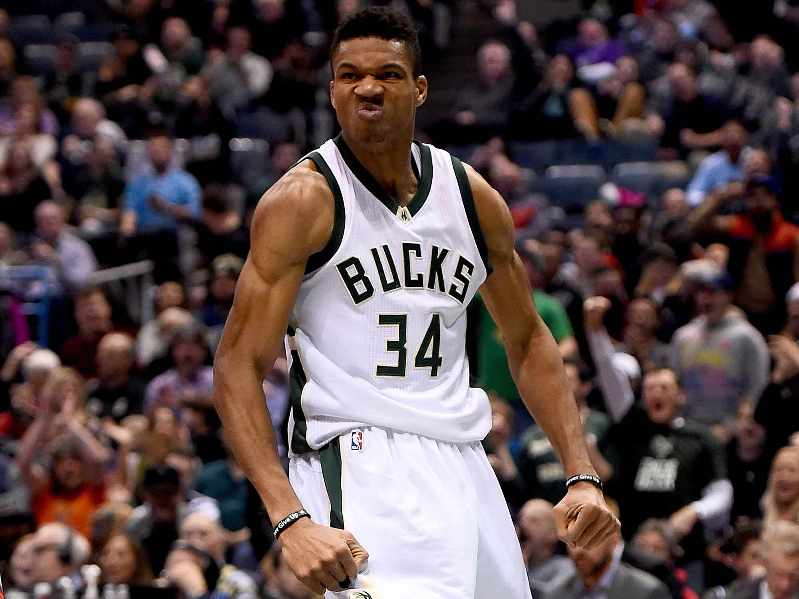

The best sports websites often times do not see the funny sides of the game. We here at scores.com see the game from all angles and all sides. To better appreciate the game we need to see the pictures,the videos and listen to the sounds.

The greek freak as he is popularly known has taken the nba by storm this season. He is already enroute to breaking the all time scoring record for the Milwuakee Bucks.